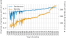

Week 8: Privacy Policies, Incomplete Contracts, and Power
DSAN 5450: Data Ethics and Policy
Spring 2026, Georgetown University
What is Policy? And What is Data Policy?
\[ \DeclareMathOperator*{\argmax}{argmax} \DeclareMathOperator*{\argmin}{argmin} \newcommand{\bigexp}[1]{\exp\mkern-4mu\left[ #1 \right]} \newcommand{\bigexpect}[1]{\mathbb{E}\mkern-4mu \left[ #1 \right]} \newcommand{\definedas}{\overset{\small\text{def}}{=}} \newcommand{\definedalign}{\overset{\phantom{\text{defn}}}{=}} \newcommand{\eqeventual}{\overset{\text{eventually}}{=}} \newcommand{\Err}{\text{Err}} \newcommand{\expect}[1]{\mathbb{E}[#1]} \newcommand{\expectsq}[1]{\mathbb{E}^2[#1]} \newcommand{\fw}[1]{\texttt{#1}} \newcommand{\given}{\mid} \newcommand{\green}[1]{\color{green}{#1}} \newcommand{\heads}{\outcome{heads}} \newcommand{\iid}{\overset{\text{\small{iid}}}{\sim}} \newcommand{\lik}{\mathcal{L}} \newcommand{\loglik}{\ell} \DeclareMathOperator*{\maximize}{maximize} \DeclareMathOperator*{\minimize}{minimize} \newcommand{\mle}{\textsf{ML}} \newcommand{\nimplies}{\;\not\!\!\!\!\implies} \newcommand{\orange}[1]{\color{orange}{#1}} \newcommand{\outcome}[1]{\textsf{#1}} \newcommand{\param}[1]{{\color{purple} #1}} \newcommand{\pgsamplespace}{\{\green{1},\green{2},\green{3},\purp{4},\purp{5},\purp{6}\}} \newcommand{\pedge}[2]{\require{enclose}\enclose{circle}{~{#1}~} \rightarrow \; \enclose{circle}{\kern.01em {#2}~\kern.01em}} \newcommand{\pnode}[1]{\require{enclose}\enclose{circle}{\kern.1em {#1} \kern.1em}} \newcommand{\ponode}[1]{\require{enclose}\enclose{box}[background=lightgray]{{#1}}} \newcommand{\pnodesp}[1]{\require{enclose}\enclose{circle}{~{#1}~}} \newcommand{\purp}[1]{\color{purple}{#1}} \newcommand{\sign}{\text{Sign}} \newcommand{\spacecap}{\; \cap \;} \newcommand{\spacewedge}{\; \wedge \;} \newcommand{\tails}{\outcome{tails}} \newcommand{\Var}[1]{\text{Var}[#1]} \newcommand{\bigVar}[1]{\text{Var}\mkern-4mu \left[ #1 \right]} \]
Discourse Around “Data Policy” in the US
- (This is the level at which “national conversations” are conducted around big data)
Actually-Relevant Takeaway
- Unlike the US, there are countries and national/international institutions where policies are formed, in varying degrees, by processes in which data comes into play
- We’ll discuss more examples; two I can speak to directly from work as data consultant:
- EU: Consulted on project around implementation of GDPR
- UNESCO: Received grant for data-analysis of international translation policies
- 194 UN member states who participate in formation of these policies
- 2 UN member states who refuse to participate on basis of “anti-Israel bias” (you’ll never guess which ones! Hint: Apartheid South Africa, Rhodesia used to provide 3rd and 4th vote in this bloc, but no longer exist)
- NY MTA: Consulted on project studying NYC subway data, until passage of NYS Executive Order 157 banning state funding for any person or organization supporting boycott of Israel
¯\_(ツ)_/¯
\(\implies\) Comparative Perspective
- We’ll study various countries / international orgs and their attempts to tackle data policy issues (with hope that takeaways can be applied to the US someday as well)
- Important to retain descriptive/normative distinction!
- They’ll become harder to distinguish, as we discuss:
- What are the policies currently in existence?
- What are their drawbacks?
- And, among the latter, which ones could be addressed via policy? (requires understanding processes of policy formation) Which ones could not? (prisoner’s dilemma)
The Present-Day Policy Framework (Descriptive): Notice and Consent
OECD Guidelines, 1980
- “The basis for most modern privacy laws” (Sugimoto, Ekbia, and Mattioli 2016)
- Collection Limitation Principle: data may be collected “where appropriate, with the knowledge or consent of the data subject.” (OECD 1980, 14)
- Use Limitation Principle: “Personal data should not be disclosed, made available or otherwise used for purposes other than those specified [at time of collection] except with the consent of the data subject” (OECD 1980, 15)
EU Data Protection Directive, 1995
- Art. 7: Processing allowed when “the data subject has unambiguously given his [sic] consent.”
- Art. 8: Use of sensitive data is restricted, except where “the data subject has given his [sic] explicit consent to the processing of those data.”
- Art. 26: Prohibits export of personal data to non-Euro countries lacking “adequate data protection”, except when “the data subject has given his [s] consent unambiguously to the proposed transfer” (Directive 95/46/EC of the European Parliament and of the Council of 24 October 1995 on the Protection of Individuals with Regard to the Processing of Personal Data and on the Free Movement of Such Data 1995)
- Superceded by GDPR in 2018
EU General Data Protection Regulation (GDPR), 2018

«Consent is one of the easiest to satisfy because it allows you to do just about anything with the data» (—the text right below this screenshot)
Reading / Implementing the GDPR
- Main document: 261 pages
- For SaaS companies: a nice, 34-page abridgement
Why We Have To Stop the Individual-Policy-Level Descriptive Part Here
(And await your final policy papers!)
(Normative) Issues with Notice and Consent
The Crux of the Normative Issues

Does Reading = Understanding?
- Does reading \(\implies\) understanding implications / contingencies / ambiguities?
- NLP could (and should!) be helpful (“making privacy policies machine readable […] would help users match privacy preferences against policies offered by web services”), but mostly just reveals how bad the problem is:

The Intuitive Problem of Contracts
- Hard to read, harder to understand, possibly rly bad stuff in them, won’t know until you read + understand
- Solution (in theory… in modern liberal market-based democracies): Collective action!
- Option 1 (Exit): Find better platform, use it instead \(\Rightarrow\) company dies (competitive market)
- Option 2 (Voice): Raise a fuss, hoot and holler, make a big stink about it, etc.
- \(\Rightarrow\) (2a) Company will change/remove it to avoid embarrassment and/or prevent Option 1 becoming an option
- \(\Rightarrow\) (2b) Government intervention (hypothetical functional government)


The Fundamental Problem of Contracts
- Just as we can’t observe two simultaneous worlds \(W_{X = 0}\) and \(W_{X = 1}\) which differ only in the value of \(X\),
- We can’t foresee all possible contingencies that need to be included in a contract
- (We can try, though! Hence use of obfuscatory words to minimize liability)
- So, when a situation arises which is not covered by a clause in the contract, what happens? What principle determines whose interpretation wins out?
- (Hint: It is actually literally my legal middle name…)
…POWER!
- Examples from employment contracts (tooting own horn):
- In a private, cooperatively-owned, democratic firm, outcome determined by conversation, majority vote, unanimity, etc.
- These technically exist in the US! Employing 2,380 workers, \(\frac{2380}{127509000} \approx 0.0019\%\) of US workforce
- Otherwise, in a non-unionized private firm (94% of total), the outcome is determined by organizational hierarchy
- This is the case for \(\frac{125000000}{127509000} \approx 98.03\%\) of US workforce
Descriptive and Normative Implications
- Who has power w.r.t. incompleteness of contracts?
- Who ought to have power w.r.t. incompleteness of contracts?
- Residual rights of control…
Hart’s Nobel Prize Speech
Complete contracts are contracts where everything that can ever happen is written into the contract. Actual contracts aren’t like this, as lawyers know. They’re poorly worded, ambiguous, leave out important things. They’re incomplete.
A critical question that arises with an incomplete contract is, who has the right to decide about the missing things? We called this right the residual control or decision right. The question is, who has it?
Further thought led us to the idea that this is what ownership is. The owner of an asset has the right to decide how the asset is used where the use is not contractually specified (Hart 2017)
Understanding Rights \(\leftrightarrow\) Fighting for Rights
- “Hohfeldian” framework (Hohfeld 1913)
- A right \(r_i\) granted to person \(i\) \(\implies\) A duty/obligation imposed on everyone in the world besides \(i\) (to respect \(r_i\))
- A duty or obligation \(d_i\) imposed on a person \(i\) \(\implies\) A right granted to everyone in the world besides \(i\) (to… be a potential beneficiary of \(d_i\))
- \(\implies\) rough measures of relative power in a contract:
\[ \frac{\text{rights}_i}{\text{rights}_j} = \frac{\text{obligations}_j}{\text{rights}_j} = \frac{\text{rights}_i}{\text{obligations}_j} = \frac{\text{obligations}_j}{\text{obligations}_i} \]
The Adversarial-Sisyphusian Problem of Contracts
- Recall Intuitive Problem of Causal Inference: Correlation \(\nimplies\) Causation, but can do a bunch of work to overcome
- Adversarial-Sisyphusian Problem is one level worse üò±
- IPCI: You vs. discovered correlation (inanimate)
- ASPC: You vs. companies investing resources üí∞ into making the problem harder and harder for you
- tldr: The moment you (\(N=1\), $) finally find and ‚Äúfix‚Äù bad thing, company (\(N \gg 1\), $$$) adds more ambiguity to re-enable / sends your data to "new", "different" 3rd-party processor ü•∏